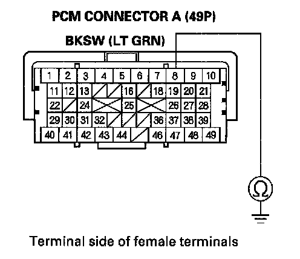
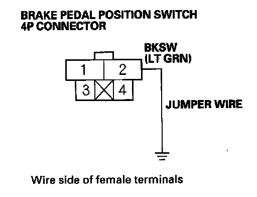
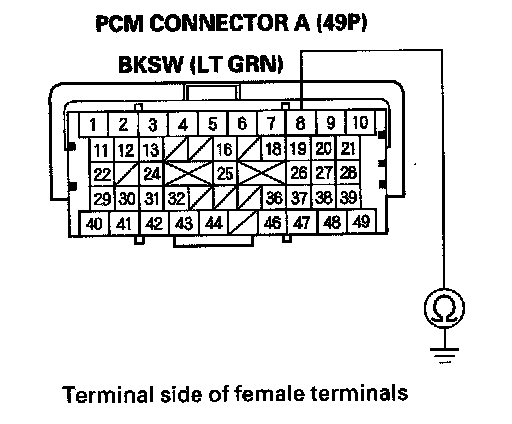

Brake Pedal Position Switch Signal Circuit Troubleshooting
Brake Pedal Position Switch Signal Circuit Troubleshooting1. Turn the ignition switch ON (II).
2. Check the BRAKE SWITCH in the DATA LIST with the HDS.
Does it indicate OFF?
YES - Go to step 3.
NO - Inspect the brake pedal position switch.
3. Press the brake pedal, and check the BRAKE SWITCH in the DATA LIST with the HDS.
Does it change to ON?
YES - The brake pedal position switch signal circuit (BKSW Line) is OK.
NO - Go to step 4.
4. Turn the ignition switch OFF.
5. Jump the SCS line with the HDS.
6. Disconnect the brake pedal position switch 4P connector.
7. Disconnect PCM connector A (49P).

8. Check for continuity between PCM connector terminal A8 and body ground.
Is there continuity?
YES - Repair short in the wire between the PCM (A8) and the No. 11 +B STOP & HORN (15 A) fuse. Replace the No. 11 +B STOP & HORN (15 A) fuse.
NO - Go to step 9.

9. Connect brake pedal position switch 4P connector terminal No. 2 to body ground with a jumper wire.

10. Check for continuity between PCM connector terminal A8 and body ground.
Is there continuity?
YES - Repair open in the wire between the brake pedal position switch and the No. 11 +B STOP & HORN (15 A) fuse. Inspect the brake pedal position switch.
NO - Repair open in the wire between the PCM (A8) and the brake pedal position switch.